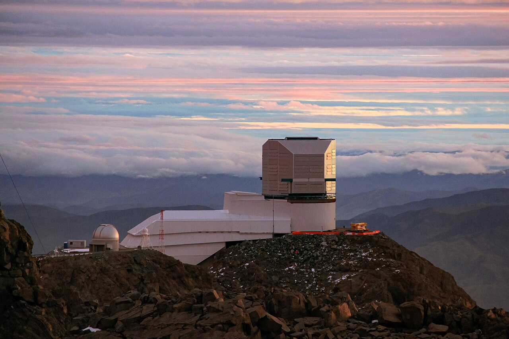
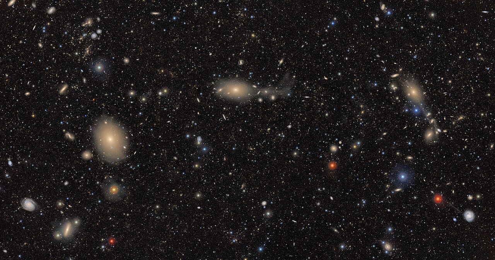

Executive Summary
이 글은 2026년 10월 7일 arXiv에 올라온 논문 한 편을 읽는다. 베라 루빈 천문대가 10년짜리 하늘 탐사 LSST를 시작하기 전에 공개한 첫 실관측 자료에, 천체를 찾고 가르는 일을 한 번에 하는 딥러닝 모델 DeepDISC를 처음 돌린 결과다. 같은 하늘에서 은하는 열에 여덟 넘게 찾아냈는데 별은 절반에 못 미쳤다.
논문이 보고한 별·은하 분류 정확도는 97.4%다. 측광 수치만 쓰는 기존 랜덤포레스트의 98.5%에 1.1%포인트 차로 붙었다. 그런데 이 숫자는 모델이 찾아낸 천체만 분모에 넣는다. 검출 단계에서 걸러져 나간 천체는 정확도가 세는 자리에 들어가지도 못한다. 논문이 원인으로 지목한 곳은 모델 구조가 아니라 학습에 쓴 주석이다.
이 글이 옮긴 수치와 인용은 모두 논문 본문(arXiv:2610.10986)에서 가져왔고, LSST의 시작 시점과 자료 규모는 루빈 천문대 공식 자료에서 확인했다. 정확도만 보고하는 습관이 왜 데이터 품질의 오래된 함정인지를 묻는 5절의 읽기는 논문의 주장이 아니라 이 글의 해석이다.
주요 수치
출처: Yadav et al., arXiv:2610.10986 (2026-10-07).
84.2%
은하 검출 완전도
정답표에 있는 은하 가운데 모델이 제자리에서 찾아낸 비율
49.1%
별 검출 완전도
같은 모델, 같은 하늘, 같은 채점 기준에서 나온 숫자
97.4%
별·은하 분류 정확도
찾아낸 천체만 세는 숫자. 놓친 별은 이 분모에 없다
6 대 1
학습 주석의 은하 대 별
은하 주석 163,687개에 별 주석 28,346개
같은 하늘, 다른 성적표
베라 루빈 천문대는 2026년 6월 29일 밤부터 10년짜리 하늘 탐사 LSST를 시작했다. 밤마다 약 10테라바이트씩 쌓아 10년이면 30페타바이트가 된다. 하늘의 같은 구역을 800번 가까이 다시 찍어 변하는 것과 변하지 않는 것을 가려내는 설계다. 본 관측이 시작되기 전, 천문대는 리허설에 해당하는 자료를 먼저 공개했다. 그것이 Data Preview 1이다. 시운전용 카메라로 2024년 10월 말부터 2025년 1월 초까지 찍은 일곱 개 필드, 약 15제곱도 분량의 6밴드 영상이 들어 있다.

논문이 쓴 자료는 그중 가장 깊은 두 필드다. ECDFS와 EDFS는 r밴드에서 각각 26.0등급과 25.5등급까지 보인다. 여기에 DeepDISC를 돌렸다. 이 모델은 천체를 찾고, 윤곽을 그리고, 별인지 은하인지 가르는 세 가지 일을 한 번의 추론으로 끝낸다. 검출과 디블렌딩과 분류를 차례로 거치는 기존 파이프라인과 구조가 다르다. 백본은 Swin-B 비전 트랜스포머이고 파라미터는 백본만 8,680만 개, 전체로는 1억 3,900만 개다.
학습은 LSST 시뮬레이션으로 사전학습한 모델에서 출발했다. 거기에 DP1의 실관측 6밴드 영상을 보여 주며 가중치를 전부 다시 열어 학습했다. 논문은 이 과정을 1단계라 부른다. 실제 하늘을 보기 전 모델의 성적은 은하 40.2%, 별 13%였다. 실관측을 보여 주고 나자 은하 84.2%, 별 49.1%로 올랐다. 두 부류 모두 크게 좋아졌는데, 좋아진 뒤에도 둘 사이의 간격은 그대로 남았다.
여기서 말하는 수치는 완전도다. 정답표에 적혀 있는 천체 가운데 모델이 실제로 찾아낸 비율을 뜻한다. 테스트에 쓴 312타일에는 은하 58,710개와 별 9,795개가 들어 있었다. 84.2%와 49.1%는 그 둘을 각각 분모로 삼아 나온 숫자다.

검출을 익힌 1단계 뒤에는 2단계가 따로 붙는다. 백본과 특징 피라미드, 영역 제안망, 검출 헤드를 모두 얼린 다음 분류 헤드만 다시 학습시킨다. 여기서 쓴 라벨은 1단계와 출처가 다르다. 분광 관측과 가이아 DR3, 측광 기반 항성 식별에서 추려 낸 ECDFS 지역의 별·은하 표본 15,611개 가운데 1단계 훈련 타일 위에 놓인 8,370개를 Rubin objectId로 짝지어 가져왔다. 은하 6,151개와 별 2,219개다. 여기에 합성 표본 961개를 더한 9,331개로 분류 헤드를 다듬었다. 든 시간은 엔비디아 H200 한 장으로 1단계가 두 시간, 2단계가 15분을 넘지 않았다.
정확도 97.4%가 세지 않는 것
같은 논문에 다른 점수도 실려 있다. 찾아낸 천체를 별과 은하로 가르는 분류 정확도는 97.4%였다. 같은 ECDFS 필드에서 측광 수치만으로 분류한 랜덤포레스트(Gatto 외, 2026)는 98.5%였다. 1.1%포인트 차이다. 이 두 숫자만 나란히 놓으면 새로 만든 딥러닝 모델이 기존 방법을 거의 따라잡았다고 읽힌다.
그런데 두 점수가 세는 대상이 다르다. 완전도의 분모는 정답표에 적힌 천체 전부다. 정확도의 분모는 모델이 찾아낸 천체다. 별 절반이 검출 단계에서 빠져도, 남은 절반만 정확히 분류하면 정확도는 높게 나온다. 놓친 별은 틀린 답으로 기록되지도 않는다. 답안지에서 통째로 빠진다.
비교 자체에도 조건이 붙는다. 랜덤포레스트는 DP1 카탈로그가 이미 검출해 놓은 천체를 받아서 분류만 한다. DeepDISC는 검출과 분류를 함께 한다. 논문도 두 숫자가 1 대 1 비교가 아니라고 적어 두었다. 어두운 쪽으로 갈수록 DeepDISC가 별이라고 부르는 천체가 랜덤포레스트보다 많아지는데, 독립 라벨로 맞춰 보면 그 불일치의 대부분에서 랜덤포레스트 쪽 판정이 맞았다.
97.4%와 98.5%는 두 분류기 가운데 어느 쪽도 학습에서 보지 않은 공통 표본에서만 쟀다. 그렇게 하지 않으면 비교가 성립하지 않는다. DeepDISC의 분류 헤드를 다듬을 때 쓴 라벨이 비교 대상인 랜덤포레스트와 같은 연구에서 나왔기 때문이다. 한쪽이 자기가 이미 풀어 본 문제를 다시 받는 상황을 피하려고 겹치는 몫을 덜어 낸 것이다.
논문은 채점의 분모를 한 번 더 좁혀 두었다. 저자들은 Scarlet에서 끌어온 의사 정답표가 완전하지도 순수하지도 않다고 적었다. 보통의 정밀도·재현율 지표는 그런 결함이 없다고 전제한다. 그래서 거기 없는 진짜 천체를 모델이 찾아내면 틀린 것으로 깎고, 쪼개져 생긴 가짜 주석을 모델이 따라 그리지 못해도 깎는다. 그래서 분류 성적은 정답표와 일대일로 짝지어진 검출만 모아 계산했다. 짝이 없는 검출은 계산에서 빠진다. 논문은 그런 검출이 진짜 천체인지 허상인지 Scarlet만 보고는 가릴 수 없다고 썼다.
97.4%가 거짓인 것은 아니다. 다만 이 숫자 하나만 요약에 남으면, 같은 모델이 정답표에 적힌 별의 절반을 엄격한 기준에서 제자리에 세우지 못했다는 사실은 어디에도 적히지 않는다.
격차는 정답표에서 시작한다
논문은 원인을 모델 구조에서 찾지 않는다. 가장 먼저 지목한 것은 학습에 쓴 주석의 구성이다. 훈련에 쓴 994타일에는 은하 주석 163,687개와 별 주석 28,346개가 들어 있었다. 약 6 대 1이다. 이 쏠림이 별 재현율을 억누르고 있다고 논문은 그대로 적었다.
저자들도 쏠림을 그냥 두지는 않았다. 별 쪽에 가중치를 더 주고 focal loss를 걸자 같은 채점 기준에서 별 완전도가 49.1%에서 66.6%까지 올랐다. 그런데도 대표 성적으로는 보정하지 않은 모델을 골랐다. 보정을 걸면 2단계 분류 성적이 오히려 내려가고, 보정 값 자체가 이 훈련 집합의 부류 비율에 맞춰 잡은 것이라 다른 하늘에 그대로 옮길 수 없기 때문이다. 훈련 자료를 다시 뽑지도 모델을 바꾸지도 않고 학습에서 두 부류를 얼마나 무겁게 셀지만 바꿨는데 별이 17%포인트 넘게 올랐다. 그 사실 자체가 격차가 어디서 오는지를 가리킨다.
주석을 만든 방식도 별에 불리하다. 사람이 하나하나 붙인 라벨이 아니라, Scarlet 디블렌딩이 내놓은 마스크와 DP1 카탈로그의 refExtendedness 플래그를 조합한 의사 정답이다. refExtendedness는 천체가 점으로 보이는지 퍼져 보이는지를 가르는 값인데, i밴드 24등급을 넘어가면 판정이 흐려진다. 별은 원래 점으로 보이는 천체라 바로 그 경계에서 가장 모호해진다.
반대쪽 끝에서도 문제가 생긴다. 아주 밝은 별은 중심이 포화돼 Scarlet이 하나의 천체를 여러 조각으로 쪼갠다. 겹치는 가짜 주석이 만들어지고, 그것을 걸러내는 과정에서 별 표본이 한 번 더 줄어든다. 어두운 쪽에서는 경계가 흐려지고 밝은 쪽에서는 조각이 난다.
두 교재를 맞대 보면 차이가 더 선명하다. 천체를 찾는 법을 배운 1단계는 Scarlet 마스크와 refExtendedness로 자동 생성한 주석 192,033개를 썼고, 별의 몫은 14.8%였다. 별인지 은하인지 가르는 법을 배운 2단계는 분광 관측과 가이아로 신원을 확인한 라벨을 썼고, objectId로 정확히 짝지어진 8,370개에서 별의 몫은 26.5%였다. 수가 스무 배 넘게 적은 대신 라벨이 상류 디블렌더와 무관한 별도 관측에서 왔고 쏠림도 덜하다. 은하와 별의 격차가 이 차이에서 얼마나 왔는지까지 논문이 따로 떼어 재지는 않았지만, 격차를 놓고 볼 자리가 여기라는 점은 분명하다.
모델이 본 하늘에는 별과 은하가 같이 있었다. 모델이 검출을 배운 교재에는 은하가 여섯 배 많았고, 거기 적힌 별 항목은 가장 어두운 쪽과 가장 밝은 쪽에서 특히 부정확했다. 49.1%는 모델의 능력보다 그 교재의 모양을 비춘 숫자에 가깝다.
잣대를 바꾸면 점수가 바뀐다
같은 추론 결과를 다른 기준으로 채점하면 숫자가 달라진다. 논문은 두 가지 매칭 방법을 함께 돌렸다. 엄격한 쪽은 다섯 가지 조건을 모두 요구한다. 위치가 0.5초각 안으로 가까워야 하고, 모델이 붙인 부류가 정답표와 같아야 하며, 겹침 비율이 부류별 하한을 넘어야 한다. 여기에 두 가지가 더 붙는다. 같은 정답에 다른 검출이 이미 짝지어져 있으면 안 되고, 검출 점수가 문턱을 넘어야 한다. 느슨한 쪽은 가까운 천체끼리 묶은 다음 일대일로 짝지을 뿐, 부류는 보지 않는다.
은하는 두 기준에서 84.2%와 84.9%로 거의 같았다. 별은 49.1%와 74.3%로 갈렸다. 25.2%포인트다. 이 간격은 모델이 그 자리에서 아무것도 못 봤다는 뜻이 아니다. 무언가를 보긴 했는데 엄격한 기준이 요구하는 조건을 채우지 못했다는 뜻이다. 적지 않은 별이 검출은 됐고 은하로 불렸다.
잣대는 매칭 기준 하나로 끝나지 않는다. 모델이 내놓은 후보를 어느 선부터 검출로 인정할지도 사람이 정한다. 논문은 한 장에 허용할 검출 개수 상한과 중복 제거 문턱을 검증 자료에서 거칠게 훑은 뒤 촘촘히 좁혀, 상한 485개와 중복 제거 0.7, 점수 문턱 0.22로 고정했다. 두 부류의 F1을 합쳐 가장 높아지는 자리를 고른 값이다. 아래 표에 적힌 완전도는 모두 그 문턱 위에서 나왔다.
| 채점 기준 | 은하 완전도 | 별 완전도 |
|---|---|---|
| 엄격 (부류까지 일치해야 인정) | 84.2% | 49.1% |
| 느슨 (위치만 맞으면 인정) | 84.9% | 74.3% |
| 두 기준의 차이 | 0.7%포인트 | 25.2%포인트 |
겹침 쪽 성적도 함께 보고됐다. 두 개 이상의 천체를 하나로 뭉뚱그린 비율은 14.9%였다(95% 신뢰구간 12.5~17.8%). 루빈 천문대가 직접 돌리는 DP1 공식 카탈로그의 같은 지표는 18.0%다. 논문은 이 둘을 두고 비슷하거나 약간 낮은 수준이라고만 적었다. 신뢰구간 위쪽 끝이 17.8%라 두 값이 겹친다고 볼 여지가 남아 있어서다.
DP1 자료 안에서만 보면 하나로 보이는 것이 정말 하나인지 알 길이 없다. 그래서 논문은 더 좋은 눈을 빌려 왔다. 허블 우주망원경의 CANDELS GOODS-S 근적외선 카탈로그다. DP1의 ECDFS가 r밴드 26등급 언저리까지 보는 데 비해 이쪽은 약 2등급 더 깊이 들여다본다. 학습에 쓰지 않은 구역에서 두 카탈로그를 맞대, 깨끗한 CANDELS 천체 34,612개 가운데 27,438개가 대조에 들어갔고 DP1 쪽에서는 겹치는 구역의 검출 15,928개가 들어갔다. 14.9%는 DP1의 분해 능력보다 가깝게 붙어 있는 CANDELS 천체 쌍 가운데 DeepDISC가 하나로 본 비율이다. 놓친 것을 세려면 더 깊이 본 자료가 따로 있어야 했다.
별과 은하를 가르는 약점은 루빈 천문대 공식 파이프라인에도 있다. 논문이 인용한 DP1 소스 주입 시험에서는 일부러 심어 넣은 천체의 약 20%가 refExtendedness 기준으로 별이 됐는데 그 대부분이 실은 은하였고, 별로 심은 천체가 제대로 별로 분류되는 비율은 i밴드 23.8등급에서 약 50%까지 떨어졌다. 딥러닝 모델만의 문제가 아니라는 뜻이다. 이 논문이 쓴 정답표 자체가 그 파이프라인에서 나왔으니, 모델은 상류의 약점을 받아 적은 셈이 된다.
인식되지 않은 겹침이 하류에 남기는 비용도 논문이 적어 두었다. 겹친 은하의 약 12%에서 측광값이 0.75등급 이상 틀어지고, LSST 깊이에서 전단 측정 잡음이 약 14% 늘어난다. 그 오차는 우주론 매개변수 추정까지 밀려 간다. 카탈로그를 받아 쓰는 연구가 상류의 결함을 그대로 이어받는 구조다.
저자들이 다음 숙제로 꼽은 것도 대체로 자료 쪽이다. 사람이 붙인 라벨 없이 영상만으로 선행학습하는 방식을 다음 공개 자료인 Data Preview 2 규모에서 시험해 보겠다고 했다. 별과 은하 둘로만 가르던 부류에 퀘이사를 하나 더 세우는 일, 백본을 Swin-B 대신 MViTv2로 바꿔 보는 비교도 남겨 두었다. 어두운 쪽 성적을 상대 비교가 아니라 절대값으로 재려면 앞에서 본 소스 주입 시험을 직접 돌려야 한다는 말도 덧붙였다. 지금의 성적이 의사 정답표에 매여 있다는 사실을 저자들 스스로 먼저 인정하고 들어간다.
페블러스가 이 논문을 주목하는 이유
천문학 논문이지만 여기서 벌어진 일은 데이터 품질 현장에서 자주 보는 모양이다. 성능을 숫자 하나로 보고해야 할 때, 재기 쉬운 쪽이 보고서에 남는다. 정확도는 쉽다. 모델이 내놓은 답과 정답을 맞춰 보면 된다. 완전도는 어렵다. 전체가 무엇인지 알아야 분모를 세울 수 있는데, 그 전체를 알려 주는 것이 바로 정답표다.
그래서 정답표가 기울면 두 가지 일이 한꺼번에 일어난다. 모델이 그쪽으로 기울고, 그 기울어짐을 잴 잣대도 같이 기운다. 이 논문이 솔직한 지점이 거기다. 별 49.1%라는 숫자를 숨기지 않고 보고했고, 그 원인을 자기들이 만든 주석에서 찾았다. 보고하지 않았다면 97.4%만 남았을 것이다.
제조 현장의 결함 검출, 의료 영상 판독, 자율주행 객체 인식에서도 같은 구조가 반복된다. 드물게 나타나는 부류는 학습 데이터에 적게 담기고, 적게 담긴 부류는 모델이 더 자주 놓치고, 놓친 것은 정확도에 잡히지 않는다. 놓쳤다는 사실이 숫자로 돌아오지 않으니 고칠 계기도 생기지 않는다.
모델 성적표를 받아 드는 자리에서 물어볼 것이 셋 있다. 보고된 숫자의 분모가 무엇인가. 정답표에 각 부류가 몇 개씩 들어 있는가. 그것을 만든 도구는 어느 구간에서 약해지는가. 셋 다 모델을 손보기 전에 답해야 하는 물음이고, 보통 세 번째가 가장 늦게 열린다. 이번 논문은 그 세 번째를 본문에 적어 둔 드문 사례다.
답할 방법이 아주 없지는 않다. 이 논문이 겹침 비율을 잴 때 한 일이 본보기다. 자기 자료 안에서는 확인할 수 없는 값을 더 깊이 관측한 외부 자료로 대조했다. 현장으로 옮기면 전수 검사 표본이나 재검 라벨, 다른 센서로 받은 기록이 그 자리에 선다. 전부 비싸다. 그래서 대개 생략되고, 생략된 자리에 정확도만 남는다.
여기까지 읽어 주셔서 감사하다. 논문 전문은 arXiv에서, Data Preview 1의 사양과 공개 범위는 루빈 천문대 공식 문서에서 볼 수 있다. 정확도 대신 완전도를 보고서 첫 줄에 올리려면 팀에서 무엇이 바뀌어야 하는지, 각자의 경험이 있다면 나눠 주시면 좋겠다.
참고문헌
학술
- 1.Yadav, P., Ejjagiri, Y. S., Liu, X., Merz, G., & the LSST Dark Energy Science Collaboration (2026-10-07). "DeepDISC on LSST Data Preview 1: Scene-Level Detection, Deblending, and Star/Galaxy Classification in the ECDFS and EDFS Fields." arXiv:2610.10986 [astro-ph.IM].
- 2.NSF–DOE Vera C. Rubin Observatory / LSST Dark Energy Science Collaboration (2026). "The Vera C. Rubin Observatory Data Preview 1." arXiv:2603.23786.
공식 문서
- 3.Vera C. Rubin Observatory. "Rubin Observatory Data Preview 1 Documentation." (DP1 관측 기간·필드·밴드 사양)
- 4.Vera C. Rubin Observatory. "Legacy Survey of Space and Time (LSST)." (밤당 10TB·총 30PB·약 800회 재방문)
- 5.Rubin Observatory (2026-06-30). "Action! NSF–DOE Vera C. Rubin Observatory Begins Capturing the Greatest Cosmic Movie Ever Made." (LSST 본 관측 개시)